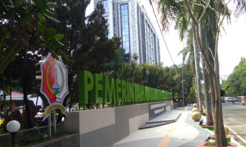
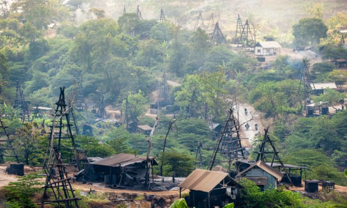
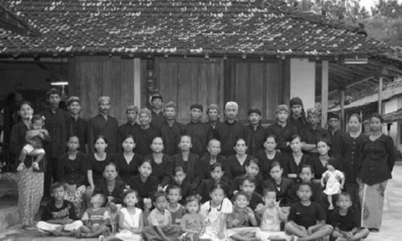

02
Hometown

About Bojonegoro
Bojonegoro is a regency in East Java, Indonesia. It is about 110 km west of Surabaya.
History
The modern regency (kabupaten) was founded on October 20, 1667 with Mas Toemapel as the first regent.

Economy
Discovery of oil and gas bring a new economic opportunities named as Banyu Urip oil and gas field.
Infrastructure
A double tracking rail connecting Semarang and Surabaya finished on September 3, 2014.

Culture
Ethnically distinguished people followed communalism movement created by Surosentiko Samin.